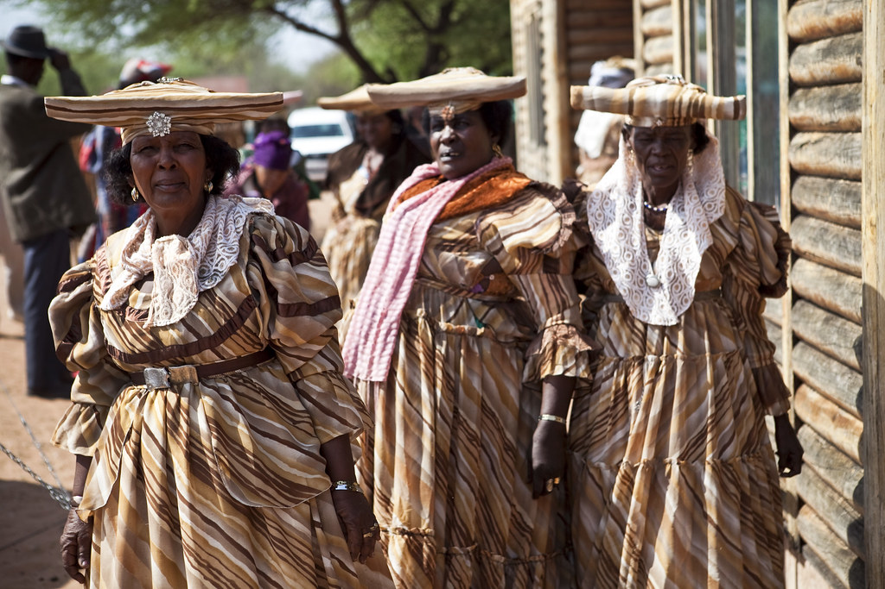
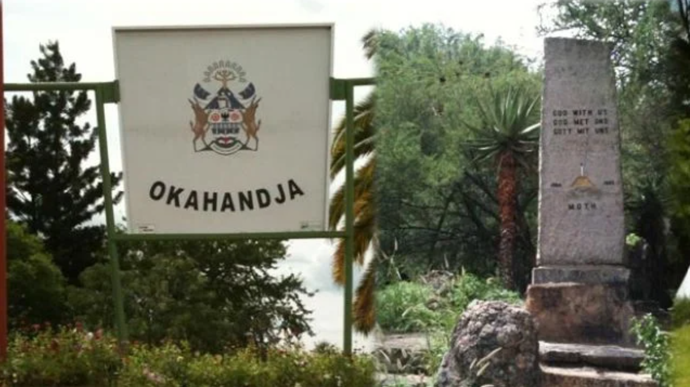
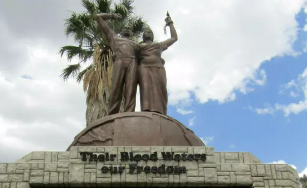

Die Geschichte von Namibia ist nicht so klar. Bevor der 20. Jahrhundert war Namibia abgeschieden. Die Bürger sprachen mit anderen Ländern nicht.
 Frauen der Herero Ein namibische Mann heute
Ein namibische Mann heute
Im 20. Jahrhundert belegten Deutschland Namibia. Deshalb war Namibia eine deutsche Kolonie. Die Deutsche kolonialisierten Namibia in dem späten 19. Jahrhundert (Jahr 1884 bis Jahr 1890). Die deutschen handelten Kupfer Von 1904 bis 1907 gab es einen Krieg, in dennen die Nama und die Herero gegen Deutschland kämpften.
Antworten Sie die Frage:
Wo liegt Namibia?
Obwohl Namibia viel großer als Deutschland war, lebten in dem Land nur 250.000 Menschen. Im Jahr 1903 lebten 3.000 deutsche Ansiedler in Namibia. Die Ansiedler zündete ein Streit zwischen die Ureinwohner. Sie kämpften über das Land, das Wasser, und das Vieh.
Nationalismus war ein wichtige Ideale in dieser Zeit. Die Deutsche glaubten, dass sie die beste Menschen war. Danach kolonialisierten sie die Herero und die Nama, die in Namibia lebten.
Antworten Sie die Frage:
Während der Kolonialismus, wie viele Menschen lebten in Namibia?
Samuel Maharero war der Leiter der Herero. Er führte seine Menschen in dem Krieg, der am 12. Januar im Jahr 1904 begann. Wir haben keine Ahnung, wer der Kampf begann, aber bevor 12 Uhr eroberten Maharero und seine Menschen eroberten eine deutsche Festung.
Samuel Maharero hat einen Brief für die Nama geschrieben. In dem Brief fragte Maharero für Hilfe mit dem Krieg, aber die Deutsche hat Mahareros Brief unterbrochen. Endlich hat die Deutsche den Krieg gewonnen. Im Jahr 1910 gab es nur 10 percent Herero, die lebendig waren. Nach dem Krieg leitete Maharero 1.000 Herero nach Großbritannien.
 Der Kampf begann in Okahandja. Okahandja ist ein kleines Dort in Namibia.Antworten Sie die Frage:
Wer begann der Krieg in Namibia?
Hier ist ein Antikolonialismus Gedanktafel. Heute liegt es in die Antikolonialismus Denkmal in Bremen, Deutschland.
 Dieser Gedanktafel sagt, „Ihr Blut bewässert unsere Freiheit.“ Heute liegt es in Namibia. Wenn die Bürger an dieser Gedanktafel blicken, dann erinneren sich über die Geschichte der Nama und der Herero.Antworten Sie die Frage:
Was ist wichtig über diese Kunstwerke?